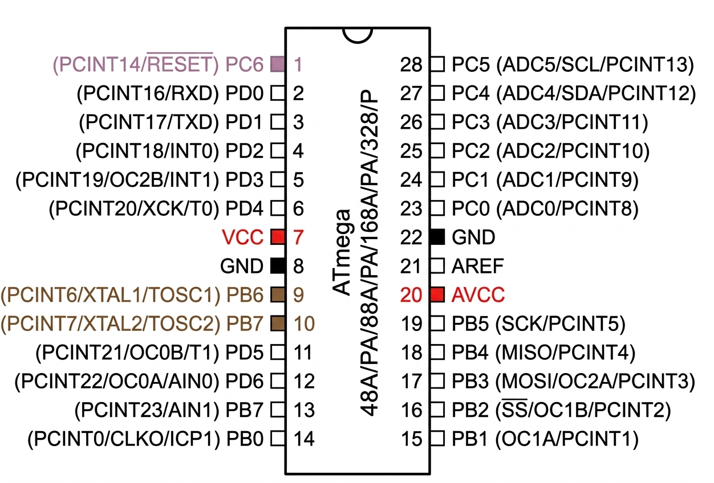
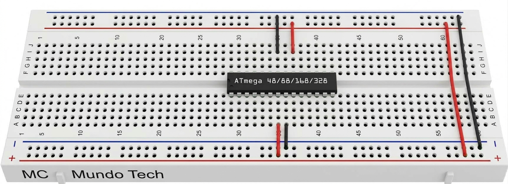
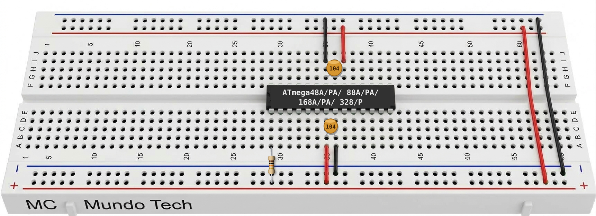
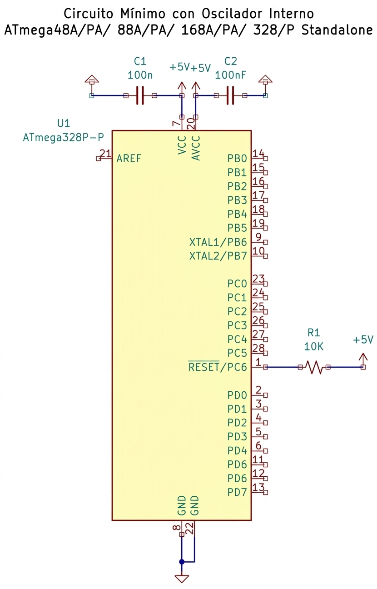
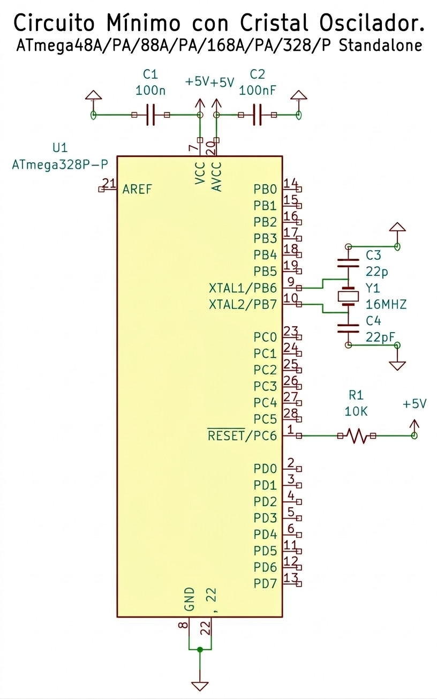
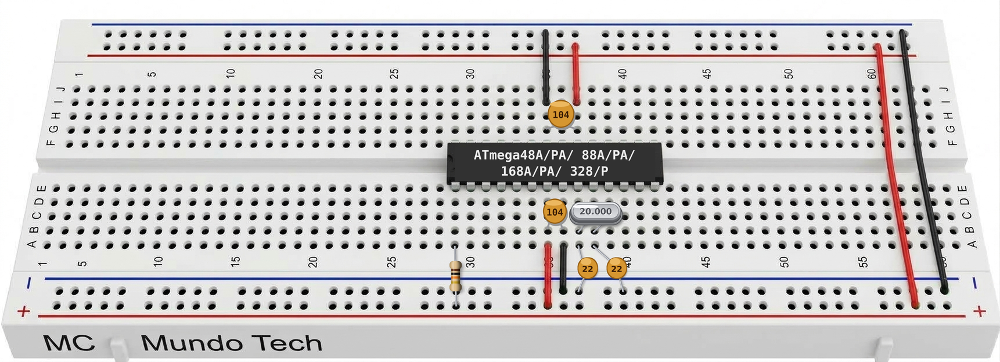

CIRCUITO MÍNIMO. μMC STANDALONE
INTRODUCCIÓN
Este artículo muestra directamente como hacer las conexiones de los microcontrolador AVR de la serie ATmega48A/PA/ 88A/PA/ 168A/PA/ 328/P, con un circuito mínimo para que pueda funcionar independientemente, standalone es decir, fuera de cualquier placa de desarrollo.
El recorrido que estudiaremos es:

1. LA SERIE ATmega48A/PA/ 88A/PA/ 168A/PA/ 328/P
Para el diseño o prueba de un proyecto electrónico podemos utilizar una placa de desarrollo, pero en su prototipado o implementación no podemos dejar una tarjeta de desarrollo como Arduino Uno o Arduino Nano como parte del circuito porque haría caro el proyecto y además, demasiado voluminoso. Para ello debemos montar el microcontrolador en un circuito con los componentes mínimos necesarios para que funcione de forma independiente o standalone.
En este proyecto utilizaremos un microcontrolador ATmega168P. Como hemos visto anteriormente, los microcontroladores de la serie ATmega48A/PA/ 88A/PA/ 168A/PA/ 328/P tienen características similares y difieren sólo en el tamaño de la memoria, soporte de bootloader, y el tamaño de los vectores de interrupción. La siguiente tabla resume estas características..
| Microcontrolador | Memoria Flash | SRAM | EEPROM | Soporte Bootloader | Firma Digital (Signature) |
|---|---|---|---|---|---|
| ATmega48P | 4 KB | 512 B | 256 B | No (Solo ISP) | 0x1E 0x92 0x0A |
| ATmega88P | 8 KB | 1 KB | 512 B | Sí | 0x1E 0x93 0x0F |
| ATmega168P | 16 KB | 1 KB | 512 B | Sí | 0x1E 0x94 0x0B |
| ATmega328P | 32 KB | 2 KB | 1 KB | Sí | 0x1E 0x95 0x0F |
2. COMPRENSION DEL PINOUT DE LA SERIE ATmega48A/PA/88A/PA/168A/PA/328/P
El pinout o patillaje del dispositivo lo podemos ver en la siguiente imagen del datasheet de la serie ATmega48A/PA/88A/PA/168A/PA/328/P que brinda Microchip

Para un ATmega de esta serie utilizado de forma independiente, hay que identificar como mínimo:
- VCC ────► Pin 7
- GND ────► Pin 8 y pin 22
- AVCC ────► Pin 20
- RESET ────► Pin 1
- XTAL1 ◄──► Pin 9
- XTAL2 ◄──► Pin 10

Una vez conocido el pinout, podemos montar el microcontrolador directamente en una placa de pruebas o en una PCB. Esto es lo que normalmente se denomina una configuración standalone: el ATmega funciona como el microcontrolador principal del circuito y no depende de una placa Arduino para ejecutar el programa.
3. ALIMENTACIÓN DEL MICROCONTROLADOR
El primer paso para la implementación del circuito mínimo consiste en conectar correctamente la alimentación del microcontrolador:
VCC y AVCC deben conectarse a la tensión de alimentación correspondiente y GND a la referencia del circuito. La familia ATmega48A/PA/ 88A/PA/ 168A/PA/ 328/P admite, según las condiciones especificadas en la hoja de datos, un rango amplio de alimentación especificado entre 1,8 V y 5,5 V.
- VCC (pin 7) → positivo de la alimentación.
- AVCC (pin 20) → positivo de la alimentación.
- GND (pin 8) → tierra.
- GND (pin 22) → tierra.
AVCC debe conectarse a VCC incluso si el programa no utiliza el convertidor analógico-digital (ADC), ya que este pin también está relacionado con la alimentación del puerto C.

4. CONDENSADORES DE DESACOPL0
Se recomienda colocar dos condensadores cerámicos de 100 nF entre VCC y GND y entre AVCC y GND, situados lo más cerca posible del microcontrolador. Su función es reducir las pequeñas perturbaciones de la tensión de alimentación producidas por los cambios de corriente internos del microcontrolador.
5. CONEXIÓN DEL RESET
El ATmega48A/PA/88A/PA/168A/PA/328/P tiene cuatro fuentes de reinicio (reset):
- Reinicio por encendido (Power-on Reset). El MCU se reinicia cuando el voltaje de alimentación está por debajo del umbral de reinicio por encendido $V_{POT}$.
- Reinicio externo (External Reset). El MCU se reinicia cuando se presenta un nivel bajo en el pin
RESETdurante más tiempo que la longitud mínima del pulso ($=> 2,5 uS$). - Reinicio del sistema por Watchdog (Watchdog System Reset). El MCU se reinicia cuando el período del temporizador Watchdog expira y el modo de reinicio del sistema por Watchdog está activado.
- Reinicio por caída de voltaje (Brown-out Reset). El MCU se reinicia cuando el voltaje de alimentación
VCCestá por debajo del umbral de reinicio por caída de voltaje ($V_{BOT}$) y el detector de caída de voltaje (Brown-out Detector) está activado.
El reinicio por encendido (Power-on Reset) y el reinicio por caída de voltaje (Brown-out Reset) son automáticos y no requieren intervención del usuario. Sin embargo, el reinicio externo (External Reset) se puede activar manualmente mediante un pulsador o un circuito externo que aplique un nivel bajo al pin RESET.
El pin RESET (pin 1) es un pin de entrada que permite reiniciar el microcontrolador. Cuando se aplica un nivel bajo a este pin, el microcontrolador se reinicia y comienza la ejecución del programa desde el vector de restablecimiento (Reset Vector).
Durante el restablecimiento (reset), todos los Registros de E/S (I/O Registers) se configuran en sus valores iniciales y el programa comienza su ejecución desde el vector de restablecimiento (Reset Vector).
El pin RESET (pin 1) debe mantenerse normalmente en nivel alto para que el microcontrolador pueda ejecutar el programa. Para ello, se conecta una resistencia de aproximadamente 10 kΩ entre RESET y VCC.
La resistencia actúa como pull-up y evita que el pin RESET quede flotante, reduciendo la posibilidad de reinicios provocados por perturbaciones eléctricas.

6. ELECCIÓN DE LA SEÑAL DE RELOJ DEL MICROCONTROLADOR
El reloj es la referencia temporal utilizada por el núcleo AVR y por muchos de sus periféricos. Determina la velocidad de ejecución de las instrucciones y la frecuencia de funcionamiento de los temporizadores, el ADC y otros periféricos.
A partir de aquí aparecen dos posibilidades:
- Utilizar el reloj interno, reduciendo el circuito externo.
- Utilizar un cristal o resonador externo, conectándolo a
XTAL1yXTAL2según las condiciones de la hoja de datos.
Elegir entre oscilador interno o externo es la decisión central para establecer la señal de reloj de un microcontrolador. Al seleccionar el tipo de oscilador, estás definiendo cuál será el origen físico que generará los impulsos eléctricos que marcan el ritmo de trabajo de la CPU y los periféricos del chip.
6.1. Circuito mínimo con oscilador interno
Hasta este punto, hemos descrito la conexión de los pines de alimentación, el pin de reset y los condensadores de desacoplo. El circuito mínimo con oscilador interno representa el diseño más básico para hacer funcionar un microcontrolador ATmega sin necesidad de componentes externos adicionales. Se presenta a la izquierda el esquema eléctrico que hemos desarrollado hasta ahora para operar el dispositivo con su configuración de frecuencia de fábrica. En este caso, el microcontrolador puede funcionar de manera independiente en la protoboard utilizando su oscilador interno.
Un dispositivo de la serie ATmega48A/PA/ 88A/PA/ 168A/PA/ 328/P incorpora un oscilador RC interno calibrado, que permite prescindir de un cristal de cuarzo externo y de sus respectivos condensadores de carga. Esto permite un diseño más compacto y económico.
De fábrica, los microcontroladores de la serie ATmega48A/PA/ 88A/PA/ 168A/PA/ 328/P vienen configurados para priorizar la compatibilidad y la seguridad en la primera conexión. El chip arranca utilizando su oscilador RC interno calibrado a 8.0 MHz, pero con el fusible (fuse bit)de división por ocho (CKDIV8) activado por defecto. Esto reduce la frecuencia real del reloj del sistema a 1.0 MHz. El fabricante elige esta velocidad tan baja deliberadamente para garantizar que cualquier programador de bajo costo (como un USBasp o un Arduino como ISP) pueda comunicarse con el dispositivo nada más sacarlo de su empaque, sin riesgo de fallos por desincronización. Una vez que se establece la comunicación inicial, se puede reprogramar los fusibles CKSEL y CKDIV8 para desactivar este divisor o para conmutar a un cristal de cuarzo externo si tu aplicación requiere mayor velocidad o precisión en el tiempo.

Para que el microcontrolador funcione a 8 MHz, es necesario reconfigurar los fuses para desactivar la división por 8. Esto se puede hacer mediante un programador ISP como el USBasp y el software AVRDUDE, que permite modificar los fuses del microcontrolador. Para hacerlo puedes consultar la sección de programación de fuses en este sitio.
En resumen, el circuito mínimo con oscilador interno es una configuración básica que permite que el microcontrolador funcione de manera independiente sin necesidad de componentes externos adicionales. En la secuencia que hemos seguido hasta ahora, con la instalación de la resistencia de pull-up en el pin de reset ya tenemos el circuito mínimo sin oscilador externo. Sin embargo, si se requiere mayor precisión en la frecuencia del reloj o si el microcontrolador ya ha sido configurado para usar un cristal externo, será necesario conectar el cristal y sus condensadores asociados.
6.2. Circuito mínimo con oscilador de cristal externo
Si deseamos utilizar un cristal externo para obtener una mayor precisión en la frecuencia del reloj, entonces sí será necesario conectar el cristal y sus condensadores asociados. O si el microcontrolador ya ha sido configurado previamente para usar un cristal externo, entonces también será necesario conectar el cristal y sus dos capacitores de 22 pF para que el microcontrolador pueda arrancar correctamente.
El uso de un cristal oscilador externo en la serie ATmega48A/PA/ 88A/PA/ 168A/PA/ 328/P permite maximizar la frecuencia de operación del dispositivo (hasta 20 MHz en variantes seleccionadas) y garantizar un error de frecuencia mínimo.
Esta configuración también se recomienda para aplicaciones que requieren una alta precisión temporal y estabilidad ante variaciones térmicas
El circuito requiere la adición del cristal y dos condensadores de desacoplo cerámicos de 22pF conectados a los pines XTAL1 y XTAL2 y a GND para asegurar el arranque correcto del oscilador. A continuación, se detalla el diagrama de conexiones correspondiente:


Con la conexión del cristal externo, el microcontrolador puede funcionar a su máxima frecuencia de operación y con una mayor precisión en la señal de reloj. Esto es especialmente importante en aplicaciones que requieren temporización precisa, como la comunicación serial o el control de motores.
7. PASOS SIGUIENTES
Con oscilador interno o con oscilador externo, una vez que hemos establecido las conexiones básicas del microcontrolador, podemos proceder a programarlo. Para ello, debemos tener el programa o código fuente que hará funcionar, instalar en el protoboard el circuito embebido a utilizar y el programador que cargará el programa al dispositivo microcontrolador.
El programa lo desarrollaremos en lenguaje C, el cual cargaremos en la memoria flash del microcontrolador utilizando un programador USBasp y el software AVRDUDE que ya hemos instalado .
Si el circuito embebido requiere una alimentación externa, el USBasp y el circuito deben compartir la misma referencia de tierra (GND).